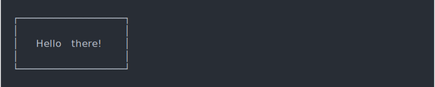
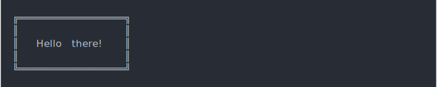
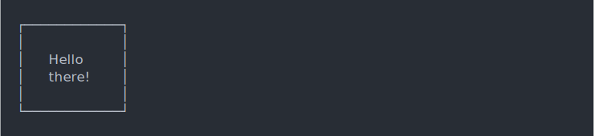
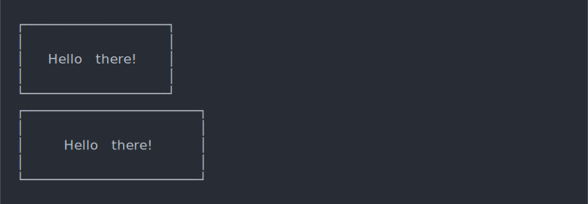
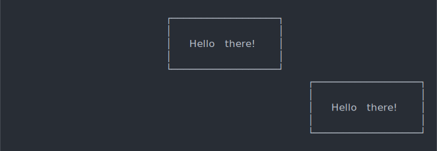
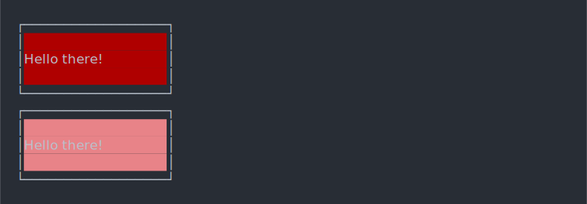
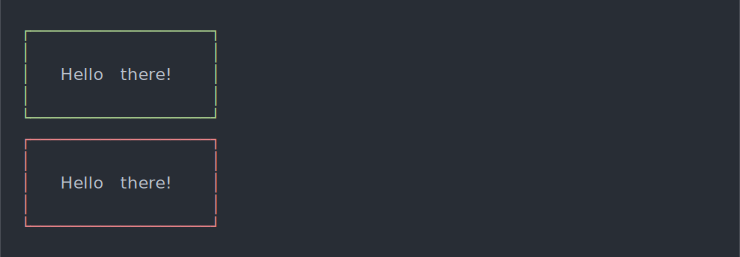
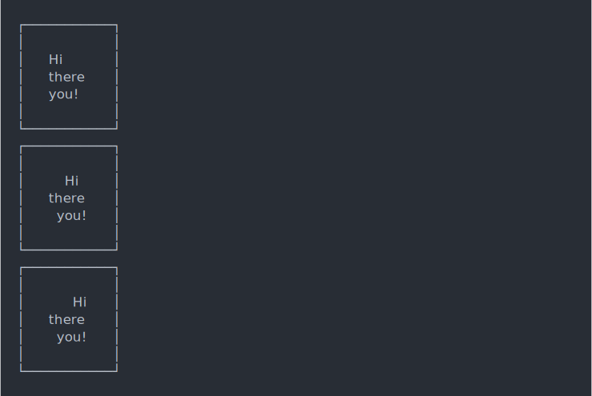

| list_border_styles {cli} | R Documentation |
Draw a banner-like box in the console
list_border_styles()
boxx(
label,
header = "",
footer = "",
border_style = "single",
padding = 1,
margin = 0,
float = c("left", "center", "right"),
col = NULL,
background_col = NULL,
border_col = col,
align = c("left", "center", "right"),
width = console_width()
)
label |
Label to show, a character vector. Each element will be
in a new line. You can color it using the |
header |
Text to show on top border of the box. If too long, it will be cut. |
footer |
Text to show on the bottom border of the box. If too long, it will be cut. |
border_style |
String that specifies the border style.
|
padding |
Padding within the box. Either an integer vector of
four numbers (bottom, left, top, right), or a single number |
margin |
Margin around the box. Either an integer vector of four
numbers (bottom, left, top, right), or a single number |
float |
Whether to display the box on the |
col |
Color of text, and default border color. Either a style
function (see ANSI styles) or a color name that is
passed to |
background_col |
Background color of the inside of the box.
Either a style function (see ANSI styles), or a color
name which will be used in |
border_col |
Color of the border. Either a style function
(see ANSI styles) or a color name that is passed to
|
align |
Alignment of the label within the box: |
width |
Width of the screen, defaults to |
boxx("Hello there!")

boxx("Hello there!", border_style = "double")

boxx(c("Hello", "there!"), padding = 1)

boxx("Hello there!", padding = 1)
boxx("Hello there!", padding = c(1, 5, 1, 5))

boxx("Hello there!", padding = 1, float = "center")
boxx("Hello there!", padding = 1, float = "right")

boxx(col_cyan("Hello there!"), padding = 1, float = "center")
boxx("Hello there!", padding = 1, background_col = "brown")
boxx("Hello there!", padding = 1, background_col = bg_red)

boxx("Hello there!", padding = 1, border_col = "green")
boxx("Hello there!", padding = 1, border_col = col_red)

boxx(c("Hi", "there", "you!"), padding = 1, align = "left")
boxx(c("Hi", "there", "you!"), padding = 1, align = "center")
boxx(c("Hi", "there", "you!"), padding = 1, align = "right")

star <- symbol$star label <- c(paste(star, "Hello", star), " there!") boxx( col_white(label), border_style="round", padding = 1, float = "center", border_col = "tomato3", background_col="darkolivegreen" )
The boxes might or might not look great in your terminal, depending on the box style you use and the font the terminal uses. We found that the Menlo font looks nice in most terminals an also in Emacs.
RStudio currently has a line height greater than one for console output, which makes the boxes ugly.